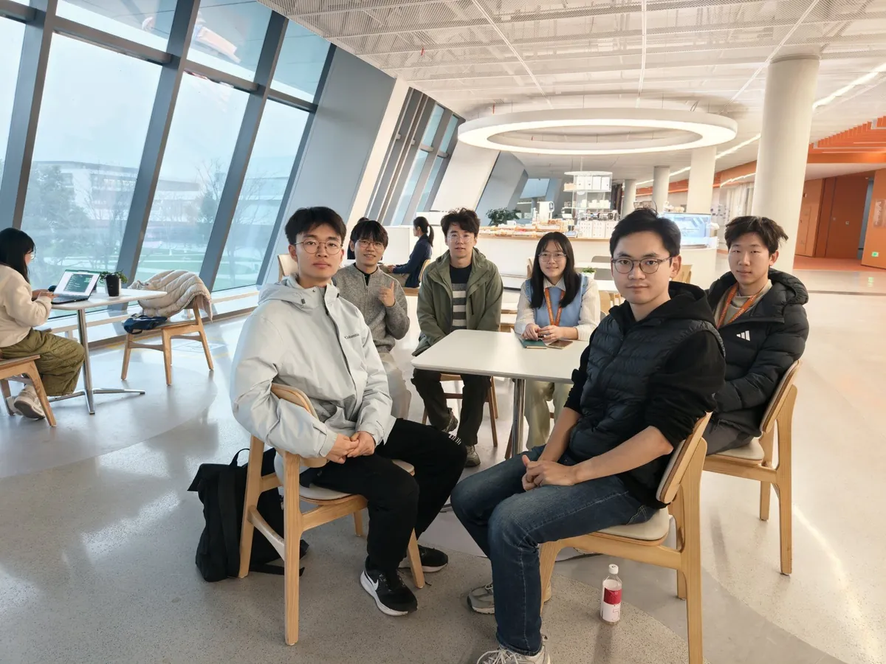

西湖大学 · AI交叉科学社IDEAS ARE BETTER TOGETHER.
好问题，值得一起动手。

AI × 科研×工具实践×人机关系×创造与生活


2026.06.07 / 首届赛事西湖大学 AI Maker 创客大赛
03 — PEOPLE & POSSIBILITIES
交叉，
从彼此开始。
在这里，分享工具经验和提出哲学问题，同样值得被认真倾听。我们连接人工智能、科研、教育与日常生活，也连接每一个愿意探索的你。
了解我们的社团
保持好奇自由交流共同创造